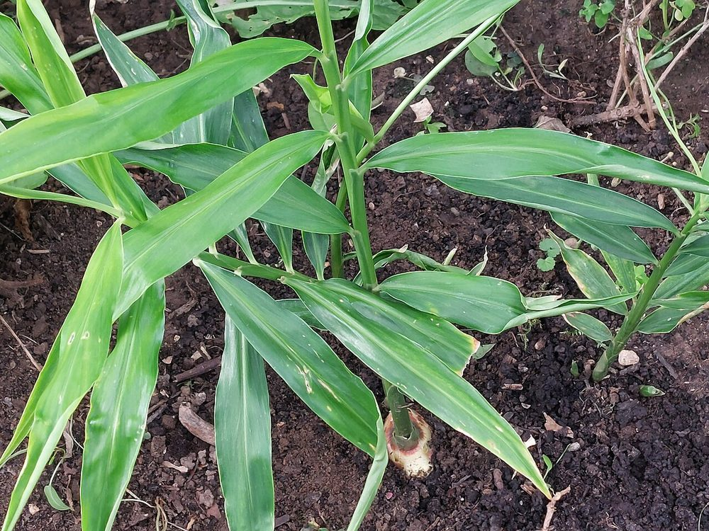
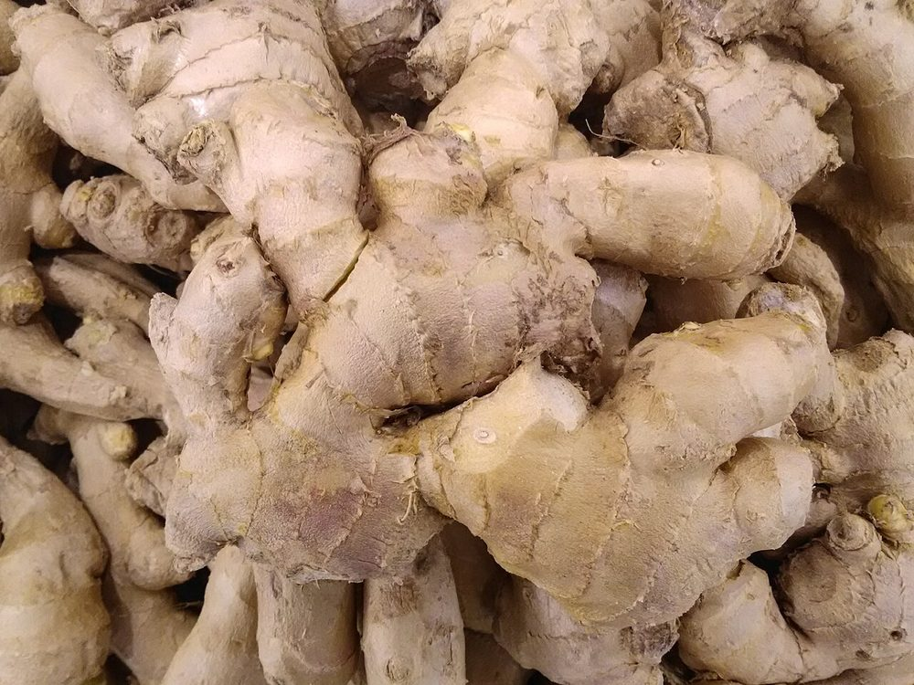

Épice
Gingembre
Zingiber officinale — rhizome
- Cycle 8 à 10 mois
- Mise à jour 2026-10-25
- Niveau de confiance faible

Présentation et utilisations
Plante à rhizome cultivée pour l'alimentation, les jus et les boissons, avec un débouché local dynamique. La transformation (séchage, broyage) permet de lisser les ventes.
Climat et sols
Chaleur et humidité, ombrage léger. Sol meuble, riche en matière organique, bien drainé ; l'engorgement fait pourrir les rhizomes.
Variétés adaptées
Les variétés se distinguent par la taille, la couleur de la chair et la teneur en huiles. Les cultivars disponibles localement ne sont pas documentés ici.
Calendrier cultural
Plantation en début de saison des pluies, récolte 8 à 10 mois plus tard, quand les feuilles jaunissent. Récolte plus précoce possible pour le gingembre frais de consommation.
Préparation du terrain
Planches surélevées ou buttes, sol ameubli profondément, compost mûr. Éviter les parcelles inondables.
Semis et plantation
Plantation de morceaux de rhizome portant au moins un bourgeon, légèrement enfoncés. Utiliser des rhizomes sains, non moisis.
Entretien, fertilisation, irrigation
Sarclages légers (racines superficielles), paillage, apports organiques. Éviter les excès d'azote qui favorisent le feuillage.
Engrais : quoi, combien, quand
Le rhizome se remplit en fin de cycle : l'azote tôt, le potassium après la floraison.
| Apport | Dose | Quand | Comment |
|---|---|---|---|
| OrganiqueFumier ou compost | 10 à 20 t/ha | Avant la plantation | Incorporé dans les billons |
| MinéralAzote (N) | 60 à 80 kg/ha | 1/2 à 30 jours, 1/2 à 90 jours | Épandu entre les rangs |
| MinéralPhosphore (P2O5) | 40 à 50 kg/ha | À la plantation | En poquet près des rhizomes |
| MinéralPotassium (K2O) | 60 à 80 kg/ha | À 90 puis 150 jours | En bande |
Doses par hectare de culture pure, à ajuster selon l'analyse de sol. Sans analyse, rester dans la fourchette basse et fractionner l'azote : c'est le geste qui évite de brûler la culture et de payer un engrais qui ne sera pas valorisé.
Maladies, ravageurs et prévention
Surveiller les pourritures de rhizome (flétrissement, jaunissement) liées à l'excès d'eau, et les insectes du rhizome. Rotation et drainage sont les premières protections.
Récolte et post-récolte
Récolter quand les feuilles jaunissent, en soulevant la terre sans blesser les rhizomes. Conserver un peu de rhizome pour la replantation si nécessaire.
Conservation et transformation
Rhizomes frais dans un local ventilé et sombre, ou séchés et broyés. Le séchage doit être rapide pour éviter les moisissures.
Coûts, rendements et débouchés
Débouchés : marchés urbains, jus et boissons, cosmétique artisanale. Aucun prix vérifié ici. Postes de dépense : semence de rhizomes (poste important), préparation des planches, main-d'œuvre de récolte.
Tutoriel étape par étape
- 1. Préparer une planche surélevée
Préparez une planche légèrement bombée, en terre meuble, avec du compost mûr : l'eau doit s'écouler.
- 2. Choisir les rhizomes
Choisissez des morceaux fermes avec au moins un bourgeon, sans tache ni moisissure.
- 3. Planter
Enfoncez légèrement, bourgeon vers le haut, espacez pour laisser le feuillage pousser.

Schlaghecken Josef · CC BY-SA 4.0 · Wikimedia Commons - 4. Entretenir
Paillez, sarclez légèrement, surveillez les pourritures et l'eau après les pluies.
- 5. Récolter et transformer
Récoltez quand les feuilles jaunissent ; vendez frais ou faites sécher et broyez pour garder.

Filo gèn' · CC BY-SA 4.0 · Wikimedia Commons
Sources, vérification et limites
- Base de connaissances interne · knowledge/agronomie.md (consulté le 2026-10-21)
Limites de cette fiche. Variétés, densités, rendements et prix non vérifiés. La demande locale est réelle mais les prix varient fortement selon la saison.
Dernière mise à jour : 2026-10-25. Les prix, rendements et calendriers locaux ne sont mentionnés que lorsqu'ils sont documentés ; dans le doute, la fiche le dit.